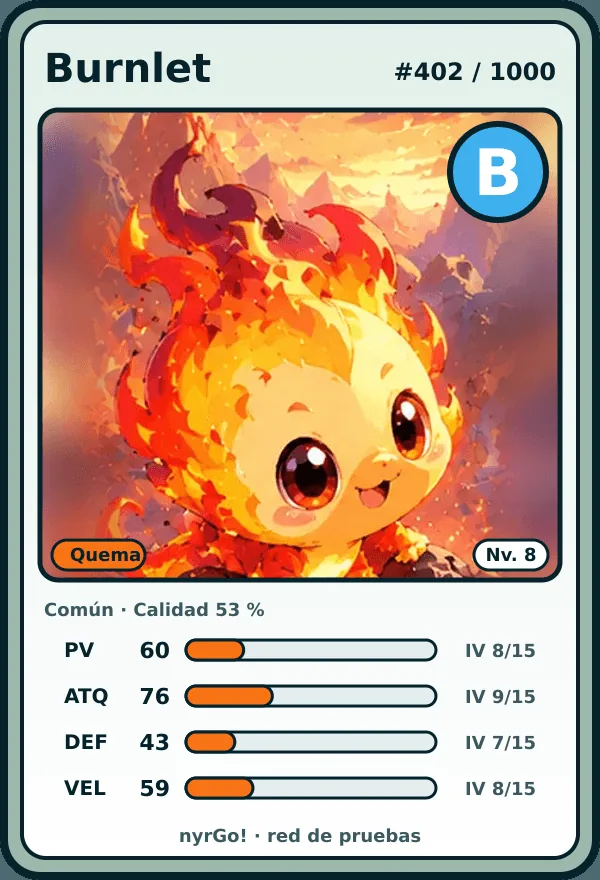
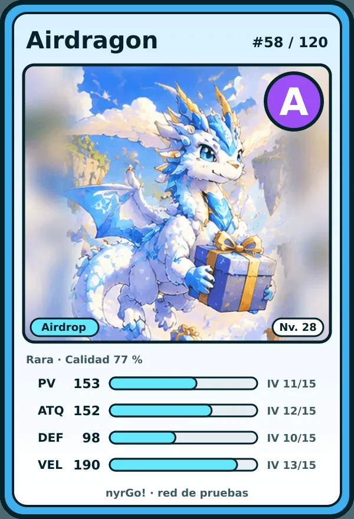
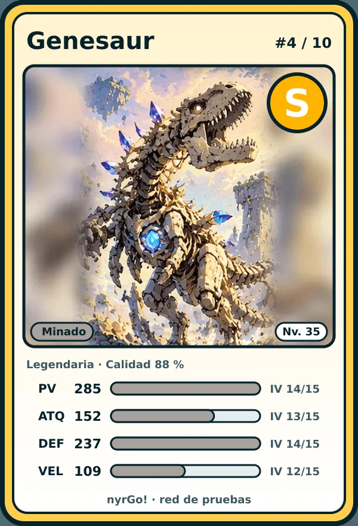
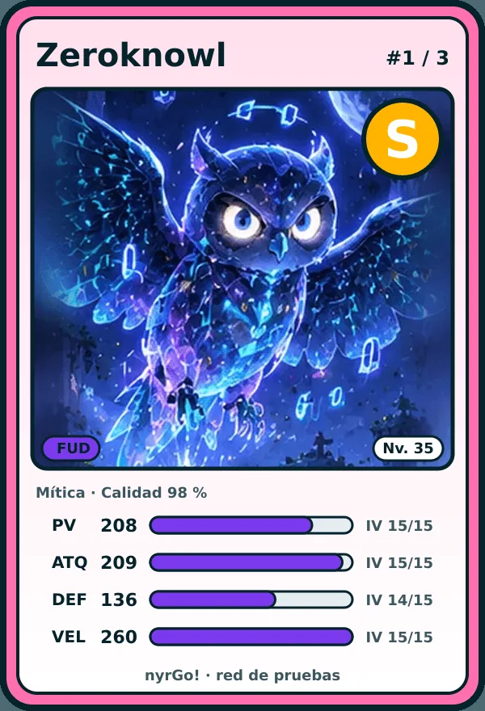

Sal a la calle.
Descubre criaturas.
nyrGo! convierte tu ciudad en el mapa. Camina, encuentra {{COUNT}} criaturas originales de {{ELEMENTS}} elementos, combate con ellas y llévalas contigo.
📍 Primera ciudad: Córdoba
Cómo se juega
-
1
Camina
El mapa es tu ciudad de verdad. Mientras te mueves aparecen criaturas cerca de ti, distintas según la zona: parques, río, centro…
-
2
Captura
Intenta capturarlas: las raras se resisten más. Cada una nace con sus propias estadísticas, así que no hay dos iguales.
-
3
Combate
Lucha con tus criaturas contra criaturas salvajes. Cada elemento gana a dos y pierde contra otros dos: elige bien a quién sacas.
-
4
Explora y evoluciona
Visita lugares para conseguir oro y materiales, cumple las misiones del día y haz evolucionar a tus criaturas.
{{COUNT}} criaturas originales
Diseñadas para nyrGo!, inspiradas en el mundo cripto: comisiones de gas, airdrops, liquidez, oráculos… Filtra por elemento.
Tu criatura, tu NFT
Si quieres, puedes sacar una criatura del juego como NFT en NEAR. El NFT es la criatura: quien tiene el token, la tiene en el juego.
- Cada carta muestra sus estadísticas y su grado, de D a S.
- Cada especie tiene un número fijo de ediciones que nunca aumenta.
- Opcional y solo para mayores de 18 años. Se juega igual sin cartera.
| Rareza | Especies | Ediciones de cada una |
|---|---|---|
| Total | {{TOTAL}} criaturas como máximo | |
Ahora mismo en la red de pruebas de NEAR (testnet): los NFT no tienen valor económico.




Preguntas
¿Es gratis?
Sí. Se juega gratis desde el navegador del móvil y se puede instalar como app.
¿Necesito una cartera cripto?
No. Solo para sacar criaturas como NFT, que es opcional y para mayores de 18 años. El juego nunca te pedirá tu frase semilla ni tus claves privadas.
¿Qué hacéis con mi ubicación?
Se usa para el juego: saber qué criaturas y lugares tienes cerca. El navegador solo la comparte con la app abierta y con tu permiso.
¿Dónde se puede jugar?
Empezamos con una beta en Córdoba. Cuando el juego esté listo, se abrirá a más ciudades.
¿Las criaturas se parecen a las de otro juego?
No. Todas son diseños originales de nyrGo!, con nombres, elementos e historia propios.